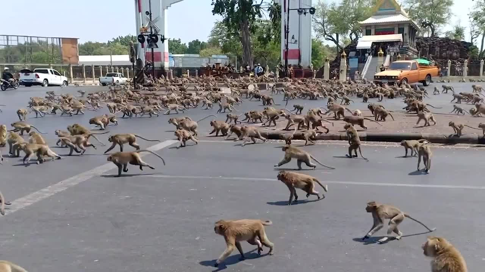

In case of an animal invasion in a human area:

1.
Awareness: Understand the types of animals that could potentially invade the area and their behaviors.
2.
Prevention: The best way to fight invasive species is to prevent them from occurring in the first place³. Verify that the plants you are buying for your yard or garden are not invasive.
3.
Habitat Management: Human population growth and expansion, habitat degradation and fragmentation, land use transformation and increasing densities of livestock grazing in protected areas are considered as major causes of man-animal conflicts². Proper management of these factors can help prevent conflicts.
4.
Community Involvement: Mitigating human-wildlife conflict must factor in incentives for local communities. Local communities can play a crucial role in preventing and managing animal invasions.
5.
Reporting: If an invasive species is spotted, it should be reported to local wildlife authorities immediately.
Remember, it's important to respect all wildlife and maintain a safe distance. Never attempt to feed or approach wild animals. It's always best to consult with local wildlife experts or authorities for guidance specific to your area.